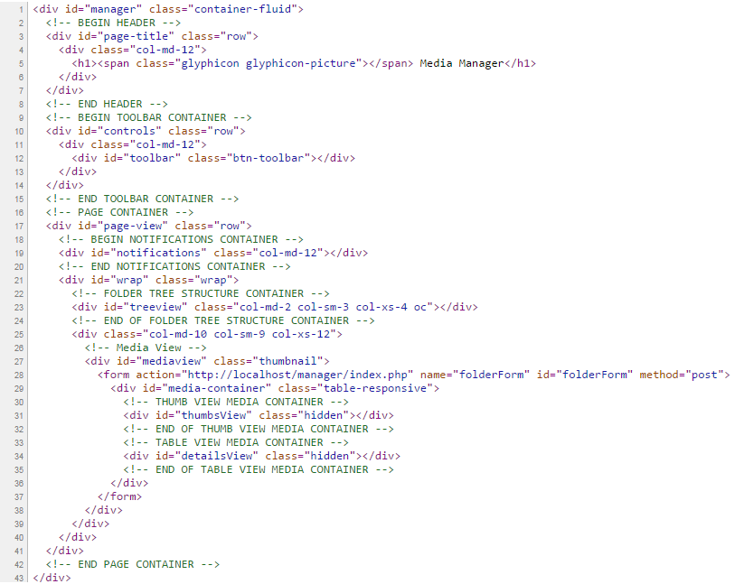

Thank you for purchasing my script. If you have any questions that are beyond the scope of this help file, please feel free to email via my user page contact form here. Thanks so much!
| Created: | 25th November, 2014 |
| By: | Prashant Pareek |
| Email: | prashantpareek1988@.gmail.com |
This is ready to use script for your codeigniter projects. In order to use media manager files in your project, you need to merge model, view and controller files into your project's mvc folder. Media manager inclues following files:
| Controllers | Modals | Views |
|---|---|---|
| media.php | manager.php | index.php |
| manager.php | ||
| medialist.php |
You can access your project's MVC folders (models, views and controllers) in:
your-project-folder/application/...
Media Manager uses folder named "assets" placed in root folder as base folder for calling all its css, js, fonts and other files.
$this->load->model('your-models-path-here/manager');$this->load->view('your-views-path-here/index',$data);$this->load->view('mediamanager/index',$data);<a href="<?php site_url('admin/media'); ?>">Media Manager</a>The HTML structure is a fluid layout with two columns. The folder tree structure content is nested within a div with an id of "treeview". The media container (column #2) content is within a div with an id of "mediaview". The media container element lies in two div with ids "thumbsView" and "detailsView". "thumbsView" contents thumbnail view of media while "detailsView" contents tabular structure of media. The general template structure is the same throughout the template. Here is the general structure.
This script uses 3 css files, which are as follows:
/* === Toolbar Section === */
#controls {
background-color: #eee;
padding: 4px 0;
border-bottom: 1px solid #ddd;
line-height: 38px
}
.btn-toolbar .btn-wrapper {
display: inline-block
}
...
/* === Folder Treeview Section === */
#treeview {
background:#11998F;
padding:5px 10px 5px 0;
}
#media-home {
list-style:none;
padding-left:10px
}
.folder-list {
padding:0 0 0 10px;
margin:0;
list-style:none
}
...
/* === Mediaview Section === */
#mediaview {
width: 100%;
overflow-y: auto;
overflow-x: hidden
}
...
etc, etc.
If you would like to edit a specific section of the site, simply find the appropriate label in the CSS file, and then scroll down until you find the appropriate style that needs to be edited.
Off-canvas layout is used to show folder tree structure for smaller screens. Here you can find its styling:
.wrap {
position:relative;
-webkit-transition:all 0.3s ease-out;
-moz-transition:all 0.3s ease-out;
-ms-transition:all 0.3s ease-out;
-o-transition:all 0.3s ease-out;
transition:all 0.3s ease-out
}
.wrap.active {
left:215px
}
@media screen and (max-width:48.063em) {
#treeview{width:215px;}
.js .oc{width:auto;position:absolute;top:0;left:-215px}
}
@media screen and (min-width:48.25em) {
.wrap.active{left:0}
}
This theme imports three Javascript files.
Initialize dropzone code to support drag and drop.
Dropzone.options.uploadForm = {
paramName: 'filedata',
uploadMultiple: true,
...
}
Js to support off-canvas view for smaller screens.
$('body').addClass('js');
var menulink = $('#showTreeView'),
wrap = $('#wrap');
menulink.click(function() {
menulink.toggleClass('active');
wrap.toggleClass('active');
return false;
});
Remove multiple attribute from file upload form for safari browsers (multiple file upload not supported)
var isSafari = Object.prototype.toString.call(window.HTMLElement).indexOf('Constructor') > 0;
if (isSafari) {
$('#upload-file').removeAttr('multiple')
}
Initiating masonry layout for media in thumnail view
var cw = 200;
var wd = $(window).width();
if((wd > 0) && (wd <= 767)) {
cw = 120;
}
msnry = new Masonry('#masonry-container', {
columnWidth: cw,
itemSelector: '.item',
gutter: 10
});
Set default view if cookie exists
var view = ($.cookie('view')) ? '#details' : '#thumbs';
$(view).addClass('active');
$(view + 'View').removeClass('hidden');
if(view == '#thumbs'){
$('#toolbar-select').removeClass('hidden');
msnry.layout();
}
This script is developed in Codeigniter PHP Framework (Version: 2.2.0).I am listing down the notable function which are used for various operations of this script.
File: application/controllers/media
This function load media folder tree structure and media list of selected media folder
public function index()
{
}
File: application/controllers/media
Create folder in selected media directory
public function create_folder()
{
}
File: application/controllers/media
Remove media(s) in selected media directory
public function remove_media()
{
}
File: application/controllers/media
Save media manager settings.
public function save_params()
{
}
File: application/models/media
Uploads media and set notifications for errors or success message
public function upload_files()
{
}
I've used the following images and icons.
Once again, thank you so much for purchasing media manager script. As I said at the beginning, I'd be glad to help you if you have any questions relating to this script. No guarantees, but I'll do my best to assist. If you have a more general question relating to the scripts on CodeCanynon, you might consider visiting the forums and asking your question in the "Item Discussion" section.
Prashant Pareek